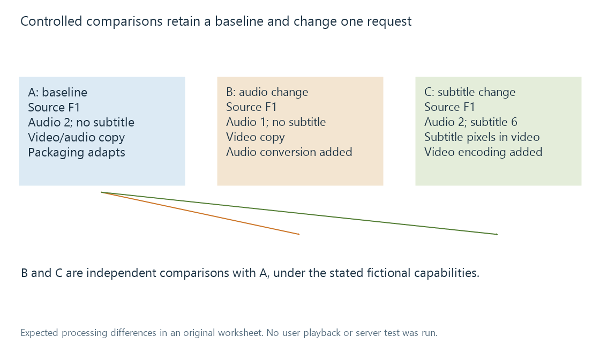

Reproducing a media playback problem
A playback reproduction preserves a defined source, session context and observation interval so that a controlled change can test a specific media-processing or delivery hypothesis.
A useful reproduction defines the session that produced the observation. The title alone leaves source version, tracks, app, starting point, limits and activity uncontrolled.
A controlled comparison changes a specified input while retaining enough context to interpret the resulting media plan and symptom.
An original three-case worksheet
Assume source F1 has compatible video, stereo AAC at audio index 2, six-channel AC-3 at index 1, and bitmap subtitles at index 6. Assume the target needs packaging adaptation, cannot use that AC-3 presentation, and needs bitmap subtitles rendered into video.
| Case | Changed request relative to A | What the comparison tests |
|---|---|---|
| A | Baseline: audio 2, no subtitle | Video/audio copy with packaging adaptation |
| B | Audio 1 replaces audio 2 | Additional audio conversion |
| C | Subtitle 6 is selected; audio stays 2 | Additional picture rendering and video encoding |

These are declared hypotheses for the example capabilities, not observed Emby results. The actual source and app may support another plan.
The resulting pipeline is allowed to change: that is the consequence being examined. Holding the output mode artificially fixed would remove the effect of the input change.
Keep the context that matters
| Context | Reason to retain it |
|---|---|
| Work/episode and edition | Distinguishes different content under one title |
| Media source identity and technical facts | Identifies the actual represented streams |
| Audio/subtitle choices | Defines selected content and processing requirements |
| App/player and output route | Defines the receiving capability context |
| Requested position | Distinguishes startup, seek and a difficult source interval |
| Applicable rate/format conditions | Explains another output plan |
| Delivery/storage path | Identifies relevant access and retrieval context |
| Competing activity and cold/warm state | Describes shared load and reusable work |
This is an experiment description, not a requirement to exhaustively vary every item before understanding a problem. It selects the evidence relevant to a specific hypothesis.
Observation and explanation should remain separate
“The playhead stopped near minute 12” is an observation. “The network caused it” is an explanation that needs relevant evidence.
A conversion log can establish stream handling and progress. A client observation can establish received ranges or presentation behavior. The artifacts should be related to the same session and time interval.
An output-mode change after selecting another track supplies evidence that the media plan changed. It does not alone prove that the original symptom was caused by that plan.
Repeats also have a state
A repeat may reuse opened resources, analysis or generated data. Competing activity can change. The same nominal request can therefore have another cold/warm context.
A problem disappearing on one repeat is useful evidence about that run. It is not automatically a permanent fix or proof of one particular cache mechanism.
A reproducible observation should retain what occurred, when, and under which relevant state. Reading playback information and reading a conversion log explain the artifact scopes that make the comparison assessable.
See Also
- Reading Emby playback information
- Reading a transcoding log
- Track selection and playback plans
- Media source selection for playback
- Playback error categories and evidence scopes